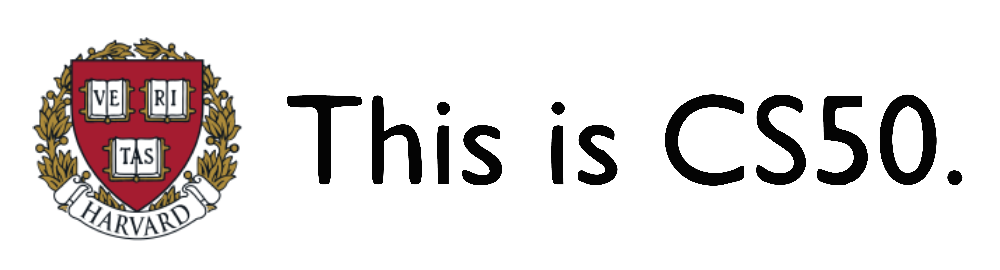

Je suis autodidacte en programmation et une passionnée de l'informatique, et je maintiens actuellement un projet open-source.
Les sujets impliquant la résolution de problèmes et le raisonnement logique m'ont toujours intriguée. J'adore surtout les sciences, les maths et la technologie.
Ma passion pour le codage remonte à mon adolescence — j'ai suivi le cours CS50x gratuit de l'université Harvard et depuis cet été-là, je continue à étudier et maîtriser des langages, des bibliothèques et des outils informatiques.
Étant polyglotte avec plusieurs expériences internationales, l'apprentissage des langues, ainsi que les cultures dont elles tirent leurs origines, me fascinent beaucoup. J'aime bien la musique et le patinage artistique aussi.